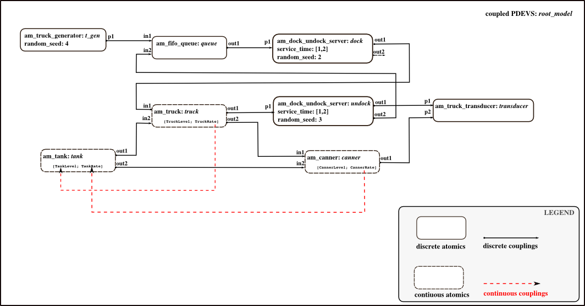
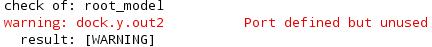
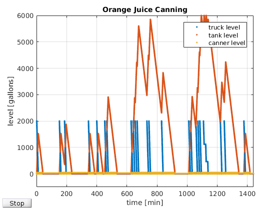

Initialization Script: Orange Juice Canning
Inits the combined discrete-continuous example "Orange Juice Canning" from "Introduction to Simulation using SIMAN", page 451.
Contents
Basic models are taken from the "Orange Juice Canning" example, folder DEVSPATH/01-modelbase/orange_juice_canning.
Call: init_orange_juice_canning
File: DEVSPATH/02-examples/hybrid/orange_juice_canning/init_orange_juice_canning.m

Model Structure
Preparation
global SIMUSTOP % to stop simulation by condition SIMUSTOP = 0; global HYBRID HYBRID = 1; % it's a hybrid model elapsed = 0;
Create the Model
Atomic models' classes: am_truck_generator, am_fifo_queue, am_dock_undock_server, am_truck, am_tank, am_canner, am_truck_transducer
% Components for coupled model root_model % Since hybrid DEVs is still in experimental phase, hybrid models need to be flattenend, so that there is no % hierarchy. % % Take care to choose different seeds for random number generators! % Generator for trucks, exponential 44 min. mean. % This is a discrete atomic. random_seed = 4; % system parameter inistates = struct('sigma',0,'rand_state',[],'number_generated',0,'generation_times',[]);% generate first truck at right beginning t_gen = am_truck_generator('t_gen',inistates,elapsed,random_seed); % Queue for trucks, FIFO. % This is a discrete atomic. inistates = struct('sigma',inf,'queue_length',0,'queue_stats',[0,0],'requested',1); queue = am_fifo_queue('queue',inistates,elapsed); % Server for docking process for trucks. % This is a discrete atomic. % System parameter service_time % uniformely distributed 1-2 min. service_time = [1,2]; random_seed = 2; % system parameters inistates = struct('sigma',inf,'rand_state',[]); dock = am_dock_undock_server('dock',inistates,elapsed,service_time,random_seed); % Server for undocking process for trucks. % This is a discrete atomic. service_time = [1,2]; random_seed = 3; % system parameters inistates = struct('sigma',inf,'rand_state',[]); undock = am_dock_undock_server('undock',inistates,elapsed,service_time,random_seed); % Truck unload. % This is a hybrid atomic. % Event, if truck is empty. TruckLevel = 0; TruckRate = 0; c_inistates = [TruckLevel; TruckRate];% continuous initial values inistates = struct('sigma',inf,'active',1,'arrival',0);% 'active' == 1 at init means: "not stopped by signal from tank" truck = am_truck('truck',inistates,c_inistates,elapsed); % Tank. % This is a hybrid atomic. % Events, if filled with 6000 gallons, % if sunk to 5500 gallons, % if empty. TankLevel = 0; TankRate = 0; c_inistates = [TankLevel; TankRate;];% continuous initial values inistates = struct('sigma',inf,'filling_suspended',0,'event_type',''); tank = am_tank('tank',inistates,c_inistates,elapsed); % Canning. % This is a hybrid atomic. % Event, if 48 gallons filled. CannerLevel = 0; CannerRate = 0; c_inistates = [CannerLevel; CannerRate];% continuous initial values inistates = struct('sigma',inf,'up_time',0, 'start_time',0);% canner up time and start time for statistics canner = am_canner('canner',inistates,c_inistates,elapsed); % Transducer to collect data. % This is a discrete atomic. inistates = struct('sigma',inf,'num_trucks',0,'num_pallets',0); transducer = am_truck_transducer('transducer',inistates,elapsed); % Hybrid coupled model root_model y_root = {}; x_root = {}; root_model = hybridcoupled('root_model',x_root,y_root); addcomponents(root_model,{t_gen,queue,dock,undock,truck,tank,canner,transducer}); Zid_model = {'t_gen','p1','queue','in1';... % trucks from generator to queue, message: 1 'queue','out1','dock','p1';... % trucks from queue to dock-process, message: 1 'dock','out1','truck','in1';... % trucks from docking-process to truck unload, message: 1 'truck','out1','undock','p1';... % trucks (empty) from unload to undocking-process, message: 1 'truck','out2','canner','in1';... % signal, that new truck arrived to canner, message: 1 'undock','out1','transducer','p1';... % trucks from undocking-process to transducer, message: 1 'undock','out2','queue','in2';... % signal from undocking-process to queue, ask for next truck, message: 'send_next' 'tank','out1','truck','in2';... % signal from tank to truck unload to suspend/restart unloading, message: 0/1 (stop/start) 'tank','out2','canner','in2';... % signal from tank to canner to stop canning, because tank empty, message: 0 'canner','out1','transducer','p2'}; % pallet à 48 gallons to transducer, message: 1 set_Zid(root_model, Zid_model); CZid_model = {'truck',2,'tank',1;... % second continuous variable (TruckRate) of truck acts as first input for tank 'canner',2,'tank',2}; % second continuous variable (CannerRate) of canner acts as second input for tank % end continuous couplings set_CZid(root_model, CZid_model);
After Incarnation
Display and check the outermost coupled. If you like to, set the observe flag to 1, so that all discrete state variables in s are tracked automatically.
showall(root_model);
% set_observe(root_model, 1);
Check(root_model);
Because we did not connect the second port of 'dock'- server, the Check() function results in:

No problem here - it is just a warning and we did it on purpose. ;-)
Define Some Values for ODE-Plot
Continuous variables can be plotted during simulation, if desired. If you want this, define here:
global ODEPLOT ODEPLOT = 1; % If ODEPLOT is set, following structure needs to be definend: plot_params = struct('OutputSel_vec',[1 3 5],... % decide, which continuous variables are to be plotted. HERE: TruckLevel, TankLevel, CannerLevel 'name_strg','Hybrid Example',... % name of the figure 'xlim_interv',[0 1440],... % xlim of axes 'ylim_interv',[-500 6000],... % ylim of axes 'xlabel_strg','time [min]',... % label for x-axes 'ylabel_strg','level [gallons]',...% label for y-axes 'title_strg','Orange Juice Canning',...% title for plot 'num_legend', 3,... % number of variables, for which a legend is supported 'legend1','truck level','legend2','tank level','legend3','canner level');% legend texts
ODEPLOT = 1 results in:

Finally
Done! Now the root_coordinator can be called to simulate the model.
without plotting during simulation (ODEPLOT == 0): [root_model,tout,yout,teout,yeout,ieout]=r_c_hybrid(root_model,tstart,tend)
with plotting during simulation (ODEPLOT == 1): [root_model,tout,yout,teout,yeout,ieout]=r_c_hybrid(root_model,tstart,tend,plot_params)
To simulate scenario from SIMAN book use tstart = 0, tend = 1440. This also fits with the plot_params. ;-)
After simulation you can get some statistics and plot the results via analyse_orange_juice_canning(root_model,tstart,tend,tout,yout)
Commands to initialize, simulate, analyze the example:
>> init_orange_juice_canning;
>> [root_model,tout,yout,teout,yeout,ieout] = r_c_hybrid(root_model,0,1440,plot_params);
>> analyse_orange_juice_canning(root_model,0,1440,tout,yout);
DEVS Tbx Home Examples Modelbase << Back